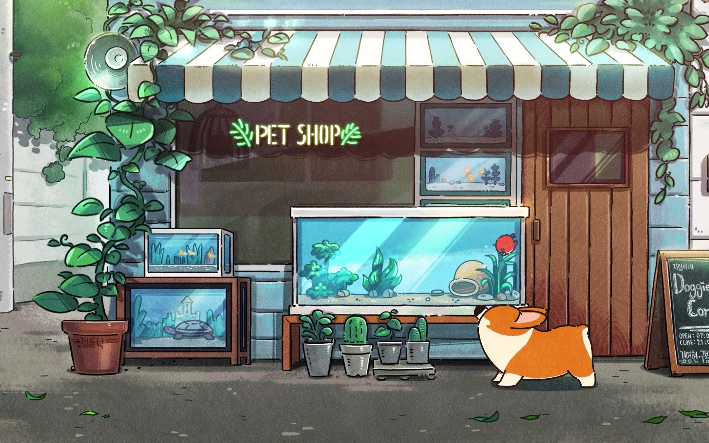

要不断的努力，才能成为更好的自己

Home
About
在你人生的低谷时，请记住，这只是暂时的一个阶段，而非你命运的终点。每一个艰难的时刻，都是你迈向光明未来的阶梯。
成功的人并不是从未跌倒，而是跌倒后一次次站起来。不要放弃，因为你比自己想象的更强大。每一个挑战都是对你意志的锤炼，每一次挫折都是你成长的契机。
相信自己，因为你有能力改变现状，迎接更美好的明天。
记住，夜晚再黑暗，也会迎来黎明的曙光。坚持下去，继续前行，你一定会找到属于自己的光明与希望。
沉舟侧畔千帆过，病树前头万木春。
与你共赏